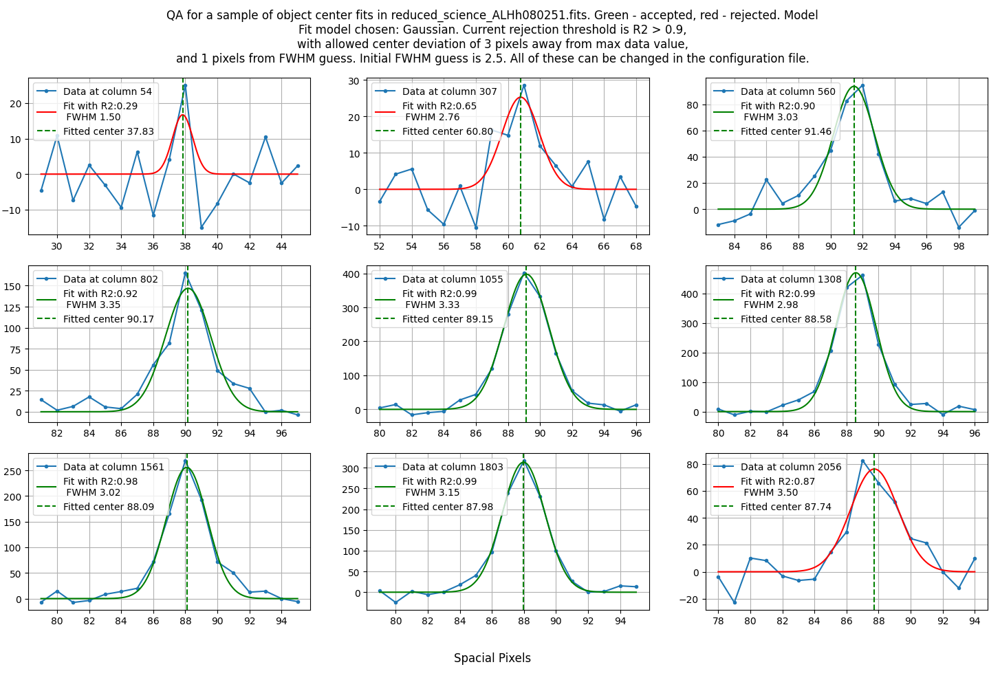
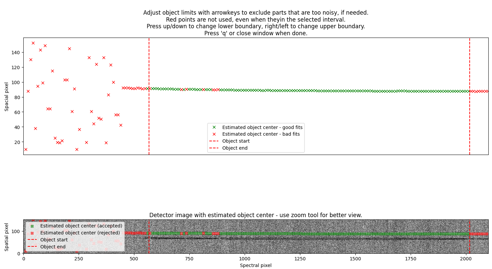
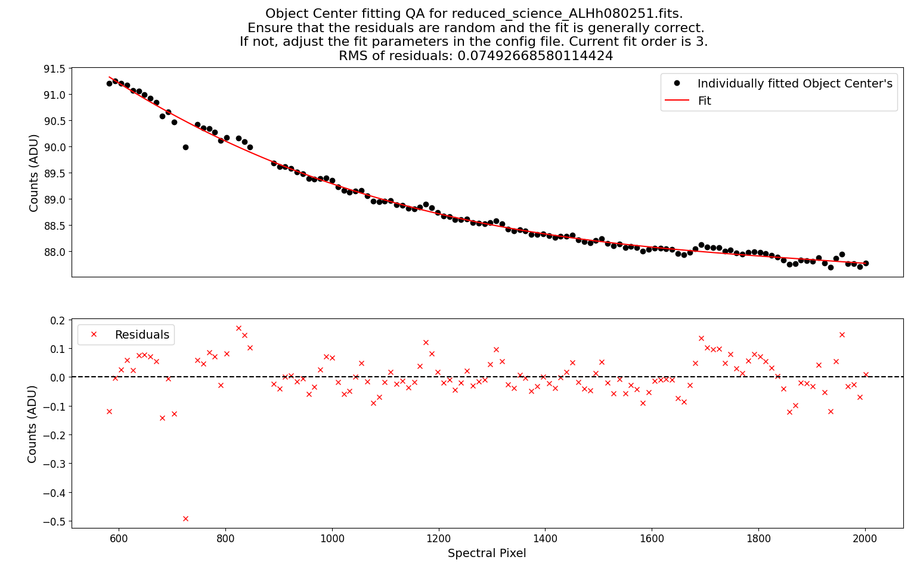
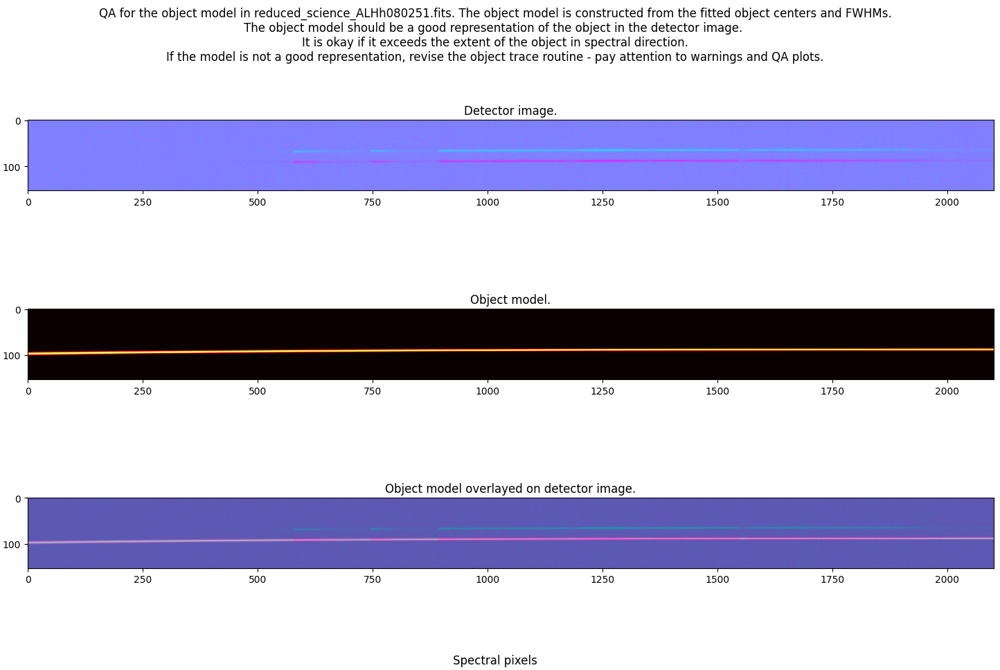
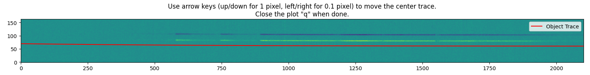
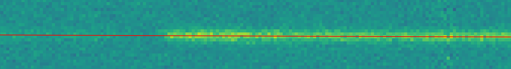

Object Tracing¶
In this routine the software estimate at what pixels the object is located in the 2D spectrum.
There are 3 ways to trace the object in the software:
Profile fitting: This is the default method.
Cloning a trace: This is done by re-using an earlier obtained trace.
Manual tracing: This is done by hand.
All of these are described below.
Profile fitting¶
The routine is called by the command:
pylongslit_objtrace PATH_TO_CONFIG_FILE
The routine will fit a user chosen profile to the object in the 2D spectrum. There are a few interactive steps in the routine.
Firstly, you will have to choose the center of the object by clicking on it. This is exactly the same routine as in sky subtraction, please see the description there.
Then, the software will fit a 1d profile to every spatial column in the 2D spectrum. A sample of the fits will be shown for you quality assesment (example here is from the SDSS_J213510+2728 example dataset):
{kind=link}
The following parameters can be set in the configuration file to control the fitting (with example values):
"trace" : {
"object": {
"spectral_pixel_extension": 10,
"fwhm_guess": 2.5,
"fwhm_thresh": 1,
"center_thresh": 3,
"fit_R2": 0.90,
"model": "Gaussian"
},
"standard": {
"spectral_pixel_extension": 0,
"fwhm_guess": 4,
"fwhm_thresh": 4,
"center_thresh": 3,
"fit_R2": 0.99,
"model": "Gaussian"
}
}
The standard star and the science object have their own set of parameters, as their shape can be different, but the meaning of the parameters is the same.
spectral_pixel_extension: The number of pixels to average over for a single 1d slice. Ex. if the spectral pixel for the fit is 1500, and this parameter is set to 10, the software will average over the pixels 1490-1510. This can help with low-signal objects, but please be aware than if you average over too large values, you might miss some features in the object.fwhm_guess: The initial guess for the FWHM of the object. This is in pixels.fwhm_thresh: The threshold for how much the FWHM can vary from the initial guess. This is in pixels.center_thresh: The threshold for how much the center of the object can vary from the maximum value in the 1d slice. This is in pixels.fit_R2: The minimum \(R^2\) value for the fit to be accepted. You can later manually crop out noisy edges, so it is okay to be a bit lenient here.model: The model to fit to the object. The options are:"Gaussian"or"Cauchy". Gaussian is useful for point-like objects, while Cauchy is useful for extended objects. It is recommended that you use the same model for the standard star and the object, as none of the models are perfect representations of the object, so at least you will have the same systematic error in both when comparing counts to flux.
Afterwards, you will be given the oppurtunity to crop out noisy edges of the trace:
{kind=link}
Here you can use the arrow keys to move the red lines if any of the excepted fits (green) are false positives.
Lastly, the software will fit a polynomial to both the fitted centers and the fitted FWHM values (fit only showed for centers, but FWHM is fitted in the same way):
{kind=link}
The goal is random residuals around 0, with a smooth trace of the object. These parameters can be changed to control the fitting:
"trace" : {
"object": {
"fit_order_trace": 3,
"fit_order_fwhm": 3,
"use_bspline_obj": false,
"use_bspline_fwhm": false,
"knots_bspline": 4,
},
"standard": {
"fit_order_trace": 2,
"fit_order_fwhm": 2,
"use_bspline_obj": true,
"use_bspline_fwhm": true,
"knots_bspline": 10,
}
}
fit_order_trace: The order of the polynomial to fit to the centers.fit_order_fwhm: The order of the polynomial to fit to the FWHM values.use_bspline_obj: If you want to use a bspline for the centers. Should only be set ttrueif the regular polynomial does not give a good fit. Use as few knots as possible to get a good fit.use_bspline_fwhm: If you want to use a bspline for the FWHM values. Use with same caution as described above.knots_bspline: The number of knots to use in the bspline.
Finally, a quality assesment plot is created to show the 2d spectrum with the 2d object trace overlaid:
{kind=link}
If the object model does not fit the object well, revise the whole process, and take extra good look at the earlier QA plots.
The trace is saved in the output directory defined in the configuration file,
and the filename is either obj_science_FILENAME.dat or obj_standard_FILENAME.dat.
In the file there are 3 columns: the spectral pixel, the center of the object, and the FWHM
of the object.
Cloning a trace¶
Sometimes there are several objects present on the detector. If you have issues tracing your object of interest (if it is too faint, for example), you can clone a trace from another object, if it is possible to fit a neibhoring object instead.
You have to first set 2 parameters in the configuration file (from the SDSS_J213510+2728 example dataset):
"obj_trace_clone" : {
"archived_spec_root": "/home/kostas/Documents/PyLongslit_dev/SDSS_J213510+2728/output/obj_science_ALHh080251.dat",
"frame_root": "/home/kostas/Documents/PyLongslit_dev/SDSS_J213510+2728/output/reduced_science_ALHh080252.fits"
}
archived_spec_root: The path to the trace you want to clone. There must be three columns in the file: the spectral pixel, the center of the object, and the FWHM of the object.frame_root: The path to the 2d spectrum you want to clone the trace to.
Then you run the command:
pylongslit_objtrace_cloned PATH_TO_CONFIG_FILE
This will open an interactive plot where you can move the object trace through the spatial axis (up/down) using the arrow keys:
{kind=link}
You have to move the trace to match the center of the object you want to trace:
{kind=link}
You will then be showed the same final QA plot as in the profile fitting procedure.
The file saving format is the same as in the profile fitting procedure.
Note
While cloning the object trace, you will clone the FWHM values as well. This is not ideal, as the FWHM values can be different for different objects. It is ususally best to clone an object where the archived object trace has larger FWHM than the object you want to trace, instead of smaller. Larger FWHM will result in more noise, but it will trace the whole object. Smaller FWHM will result in less noise, but it will miss some of the object.
Manual tracing¶
For traces that are too faint to be traced by the software or cannot be cloned, you can always trace the object by hand.
The manual tracing is called by the command:
pylongslit_objtrace_manual PATH_TO_CONFIG_FILE
This will open an interactive plot where you can either skip the object by
closing the plot, or trace by hoovering the cursor over the object and clicking
"+" to add a point to the trace. Clickin "-" will remove the last point
added - and can be clicked multiple times to remove multiple points. You can press
"h" to toggle histogram normalization, and "c" to toggle the color map:
{kind=link}
{kind=link}
The software will then perform the same routine as in the profile fitting procedure,
but with a constant FWHM value taken from the fwhm_guess parameter in the configuration file.
All the parameters are the same as in the profile fitting procedure and can be
set to control the fitting.
The file saving format is the same as in the profile fitting procedure.